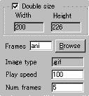
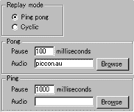

|
This applet displays a series of gif/jpeg images
with blur and sound effects. We put a very strict rule for image
names to be loaded by this applet. You can't use various file names,
instead you must name all image files with a single frame name
+ a numerical suffix. For example, if you want to load 5 gif
images. They should be like:
example1.gif, example2.gif, example3.gif, example4.gif,
example5.gif.
In this case, the frame name is "example"
and the suffixes are numbers from 1 to 5. So, the total frame number
for this example is 5.
[More technical
information about the available parameters can be found here.]
Most parameters are self-explanatory and you can
always see brief description of each parameter by moving the mouse
pointer over the wizard.
 |
First, set the frame name at "Frames"
and the frame number at "Num. frames". Actually,
you don't have to do this manually. You can browse folders and
mouse-select multiple image files while pressing SHIFT key.
The wizard will automatically set the frame name and count the
frame number. |
The applet size is also decides when you have chosen image files.
You can however double the size by checking "Double size"
box. (This is equivalent to Resolution 2 in other applets parameters.)
Then, set your desired play speed for the animation in milliseconds.
 |
Now you decide the replay mode. There are
two such as Ping pong replay and Cyclic replay.
Both clearly tells you how the sequence is played. Ping pong
mode plays the sequence back and forth, while cyclic mode
plays it cyclically.
|
If your choice is the ping pong play, you
can set pause time for both ping (forwarding sequence)
and pong (backward sequence). You can even play .au file
during the ping & pong.
Note: you should only use .au file, which is the
originally supported sound format.
Proceed to the textscroll
menu if you have checked the textscroll box; otherwise go to
the expert menu.
|